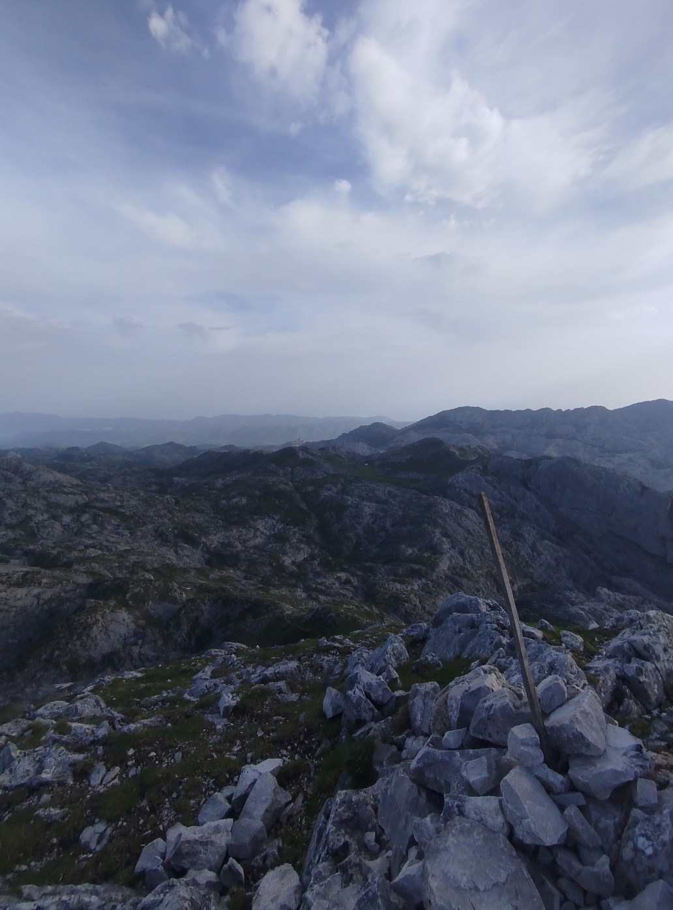
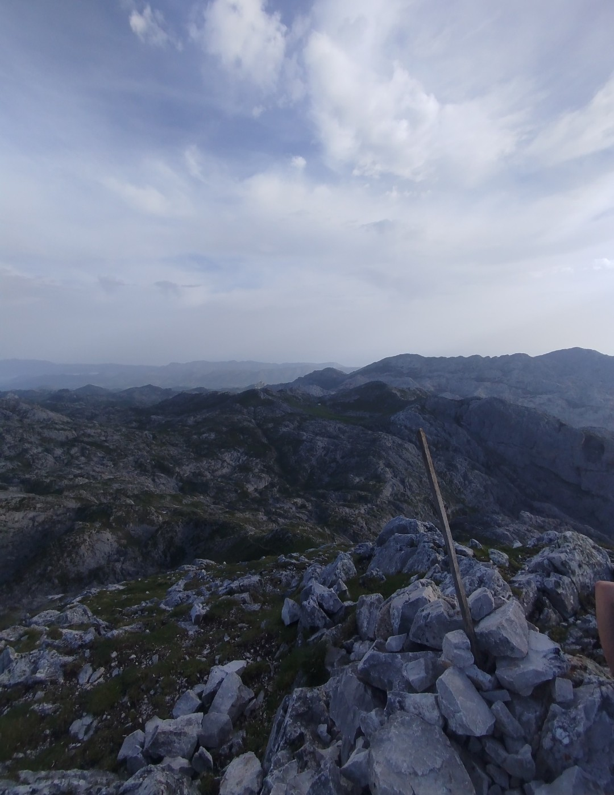
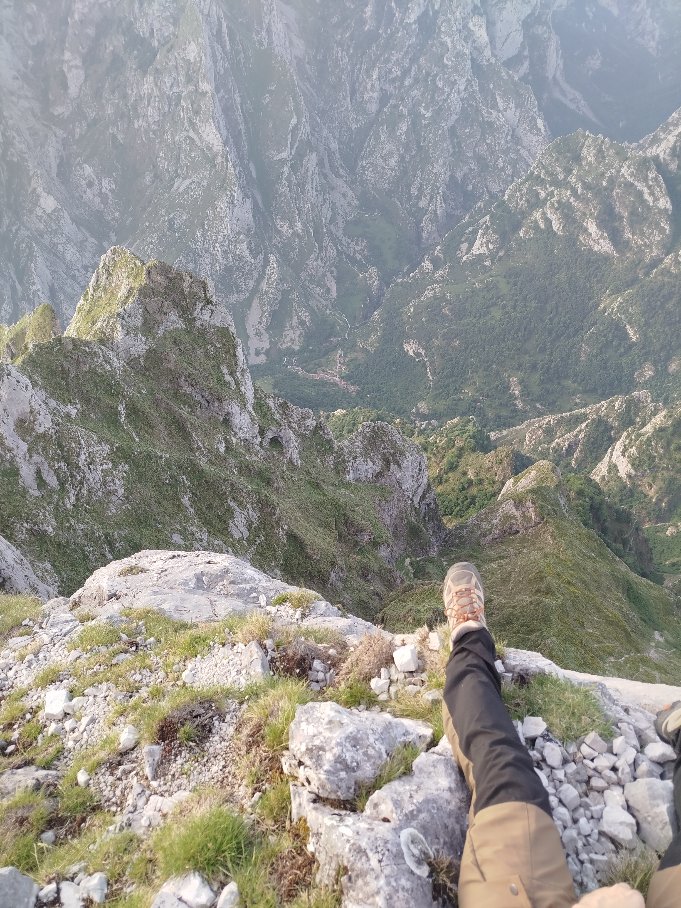
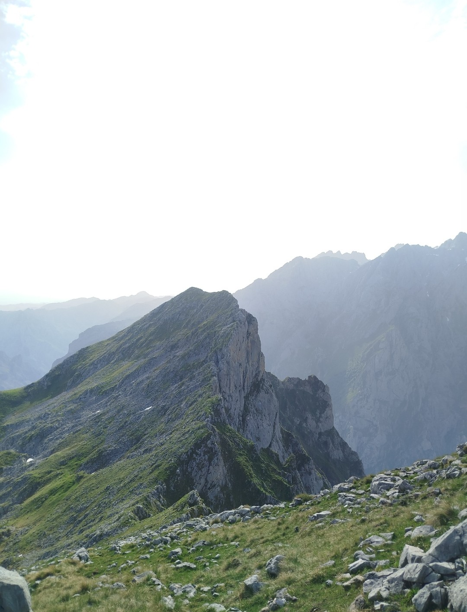
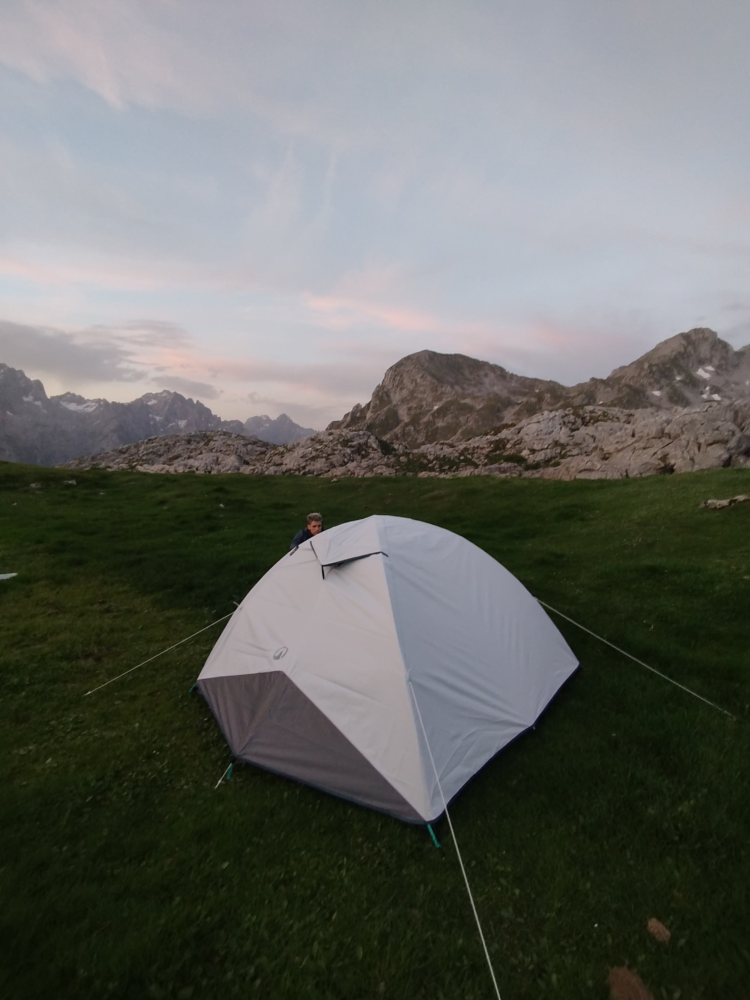
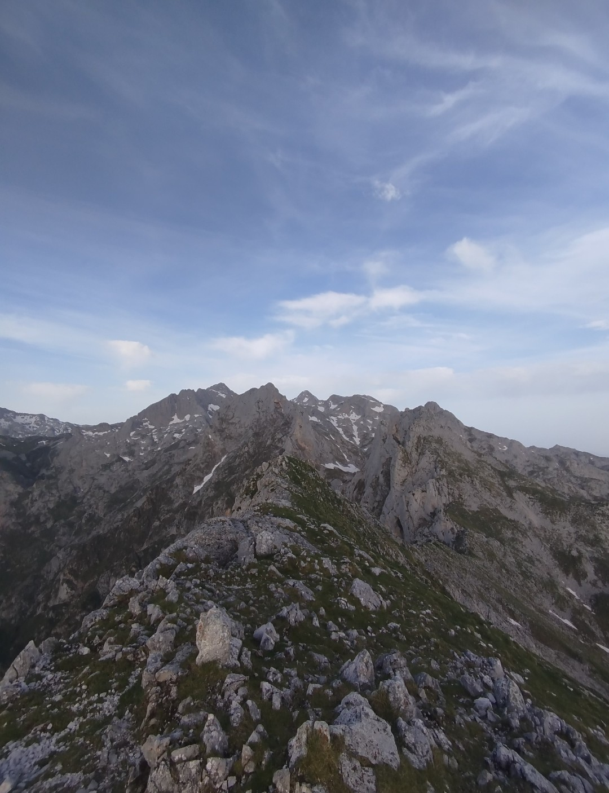
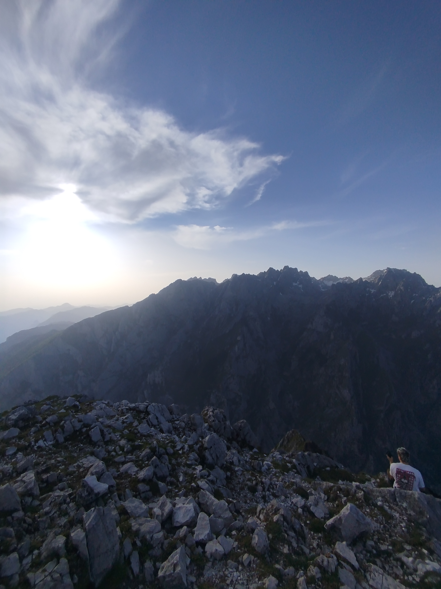
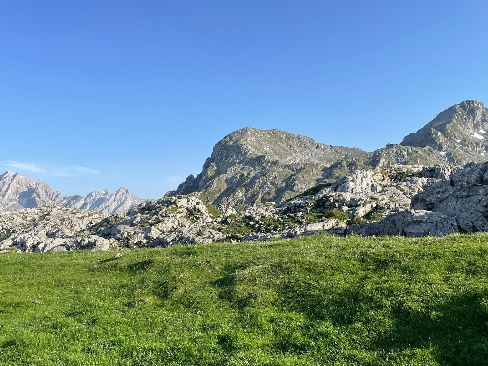

Pico Jultayu

El vigía del macizo occidental
El Pico Jultayu, con sus 1.940 metros, es la cumbre más emblemática y visible del Macizo Occidental (Cornión) de los Picos de Europa. Su silueta inconfundible domina el horizonte desde los Lagos de Covadonga y desde la propia Vega de Ario, ejerciendo una especie de magnetismo sobre todo aquel que lo contempla por primera vez. Una cima que, una vez alcanzada, no se olvida.
360° de horizonte puro
El panorama desde la cima es, sencillamente, de los mejores de todo el Parque Nacional de los Picos de Europa. Al norte, el Cantábrico brilla con una claridad que parece mentira desde casi 2.000 metros. Al este, el Macizo Central se erige con toda su brutalidad rocosa, con el Naranjo de Bulnes como protagonista indiscutible. Al sur, las estribaciones de la Cordillera Cantábrica se extienden hasta perderse. Un privilegio para los ojos.
Acceso desde Vega de Ario
La ascensión al Jultayu se realiza habitualmente desde la Vega de Ario, lo que convierte la jornada en una larga pero gratificante travesía. Desde el refugio de Ario, una senda bien marcada conduce por terreno calizo hasta la base de la cumbre, donde el desnivel se acentúa. El tramo final requiere algo de atención, con algún paso entre bloques de roca, aunque no presenta dificultad técnica para alguien con experiencia básica en montaña. La bajada por el mismo itinerario permite disfrutar de las vistas en sentido inverso.






